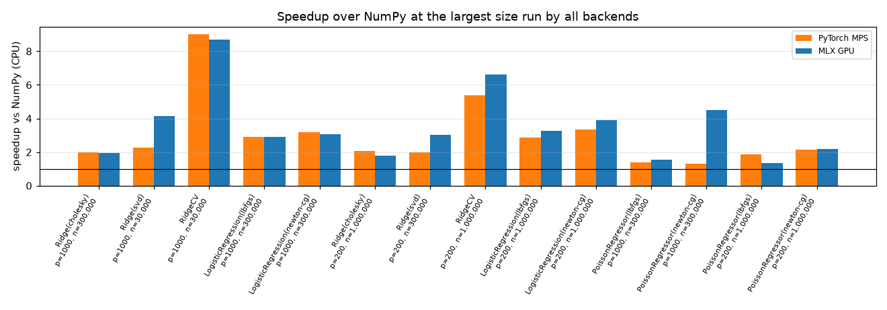
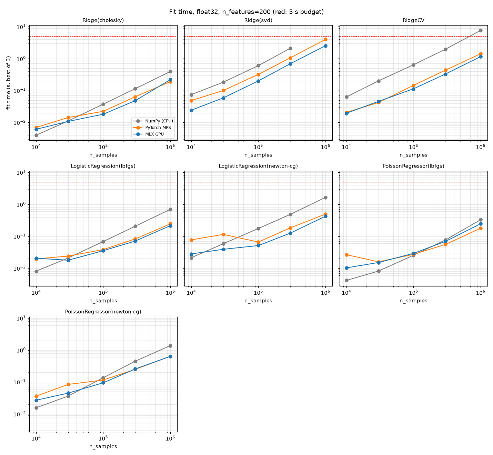
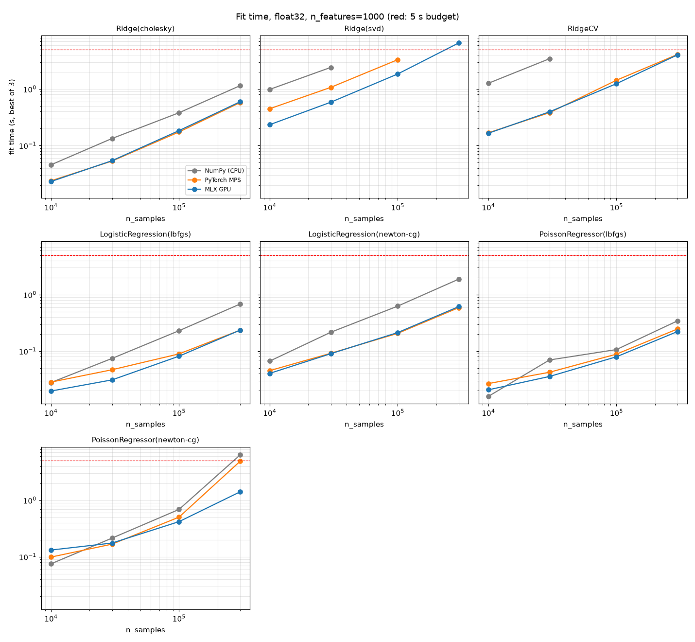
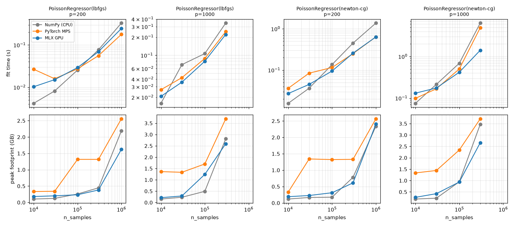

This report includes code written with the assistance of AI. The code has not yet been reviewed by a human.
Setup: Apple M4, 32 GB unified memory, macOS 26.6.2; Python 3.14.10, NumPy 2.5.5, SciPy 1.18.1, PyTorch 2.14.1, MLX 0.32.4, scikit-learn 1.10.dev0 (this branch).
array_api_support work with MLX arrays under
sklearn.set_config(array_api_dispatch=True), on both the
"gpu" (float32) and "cpu" (float64) devices.
So do GaussianMixture, the calibration helpers, and the
array API metrics. The whole pytest sklearn -k mlx
selection passes: 1647 passed, 15 skipped. Peak memory during the run
was 0.6 GB.array_api or torch or strict tests pass, as do the full
test files of every touched module, apart from 18 pre-existing torch MPS
failures (torch.unique does not support unsigned dtypes on
MPS).Ridge(solver="cholesky"),
LogisticRegression lbfgs and newton-cg,
RidgeCV at p=1000), MLX on the GPU is 0.87–1.16x
the speed of PyTorch MPS, so roughly on par. Against NumPy on
the 10-core CPU, both GPU backends are 1.8–4x faster for cholesky and
logistic regression, and 6.6–8.7x faster for RidgeCV.Ridge(solver="svd"), and RidgeCV
at p=200 (1.23x). This is despite MLX linalg running on the CPU stream.
The gain mostly comes from the QR-first thin SVD, see below.Ridge(svd) at p=200, n=1M
peaks at 3.2 GB on MLX against 6.3 GB on torch. For the largest cholesky
and logistic runs, the peaks are similar, and somewhat higher for MLX
Ridge(cholesky).array_api_compat.mlx wrapper (about 1250
lines);array_api_extra.compress helper and a few small
array_api_extra fixes;libomp,
while conda’s OpenBLAS loaded conda’s libomp. Having two
OpenMP runtimes in one process slowed down the OpenMP-parallel NumPy
path (LogisticRegression at p=200: 1.9 s, against 0.7 s
now) and segfaulted PoissonRegressor. Rebuilding with the
conda-forge compilers fixed this, and all numbers below come from the
rebuilt version.lbfgs,
newton-cg; see the dedicated section below): MLX is on par
with torch MPS for lbfgs (0.73-1.29x, best at small and
medium sizes, slower at p=200 with 1M samples) and 1.0-1.9x faster than
torch for newton-cg in most configurations, up to 3.5x at
p=1000 with 300k samples. Scores are identical across backends.Poisson(exp(0.5 + X @ w)) with
w ~ N(0, 1/n_features). n_features is 200 or
1000, and n_samples takes values from 10k up to 1M.tmp_mlx_benchmark/scripts/watchdog.py). The watchdog
SIGKILLs the process tree if any of these happen:
proc_pid_rusage(...).ri_phys_footprint, which,
unlike RSS, includes Metal/GPU buffers in unified memory;mx.set_memory_limit(6 GB),
mx.set_cache_limit(1 GB), and
torch.mps.set_per_process_memory_fraction.X would exceed 1.5 GB. It stops a backend’s sweep as soon
as one fit takes more than 5 s. No run was killed in either sweep.mx.eval / torch.mps.synchronize()) before the
clock stops. Host-to-device transfer time is measured separately
(transfer_s) and is not included in the fit time.RidgeCV(alphas=np.logspace(-3, 3, 10))
uses the default efficient leave-one-out (GCV) path.
LogisticRegression uses the default C=1.0 and
tol.Only solver="lbfgs" (the "auto" choice for
l1_ratio == 0) and solver="newton-cg" support
array API inputs. newton-cholesky, newton-cd
and newton-cd-gram still convert to NumPy internally, and
fail on torch MPS arrays as well as on MLX arrays. They are not
benchmarked. Default parameters are used (alpha=1,
tol=1e-4, max_iter=100).
Fit time in seconds (best of 3) and MLX speedup over torch MPS.
“hessp” is the number of Hessian-vector products, i.e. the number of
inner conjugate gradient iterations of newton-cg. It is
identical across backends except where noted, which confirms that the
three backends follow the same optimization path.
| solver | p | n_samples | NumPy | torch MPS | MLX | MLX vs MPS |
|---|---|---|---|---|---|---|
| lbfgs | 200 | 10k | 0.004 | 0.027 | 0.010 | 2.59x |
| lbfgs | 200 | 100k | 0.026 | 0.027 | 0.029 | 0.93x |
| lbfgs | 200 | 300k | 0.077 | 0.056 | 0.070 | 0.80x |
| lbfgs | 200 | 1M | 0.330 | 0.179 | 0.246 | 0.73x |
| lbfgs | 1000 | 10k | 0.016 | 0.027 | 0.021 | 1.29x |
| lbfgs | 1000 | 100k | 0.107 | 0.089 | 0.080 | 1.11x |
| lbfgs | 1000 | 300k | 0.344 | 0.247 | 0.223 | 1.11x |
| newton-cg | 200 | 10k | 0.016 | 0.036 | 0.027 | 1.34x |
| newton-cg | 200 | 100k | 0.136 | 0.115 | 0.095 | 1.22x |
| newton-cg | 200 | 300k | 0.450 | 0.250 | 0.257 | 0.97x |
| newton-cg | 200 | 1M | 1.380 | 0.638 | 0.637 | 1.00x |
| newton-cg | 1000 | 10k | 0.075 | 0.099 | 0.132 | 0.75x |
| newton-cg | 1000 | 100k | 0.689 | 0.503 | 0.419 | 1.20x |
| newton-cg | 1000 | 300k | 6.339 | 4.892 | 1.410 | 3.47x |
(All rows except the last: n_iter_ is identical on the
three backends. Train scores agree to 4 digits. Intermediate sizes are
in the raw results.)
Observations:
lbfgs does very little work per iteration (one loss +
gradient evaluation, 6-9 iterations), and scipy’s L-BFGS-B runs on the
host, so each iteration forces a device sync and a device-to-host copy
of the gradient. Fit times are therefore dominated by dispatch and sync
latency at small n, where MLX has lower overhead than torch MPS (2.6x
faster at p=200, n=10k). At p=200 and large n (>= 300k) torch MPS is
faster (MLX is 0.73x at 1M samples); at p=1000 MLX is 1.1x faster. We
did not investigate the p=200 large-n gap.newton-cg is dominated by the Hessian-vector products
(X.T @ (w * (X @ s))). MLX and torch MPS are on par at
p=200 for n >= 300k, and MLX is 1.2x faster at 100k. It is slower at
p=1000, n=10k (0.75x), where the problem is too small for the GPU to
help over NumPy for either backend.lbfgs at p=200, n=1M). The torch MPS
baseline is about 1.3 GB as soon as its allocator is warmed up at
30k-100k samples.MLX (mlx.core) is close to the array API but differs in
several ways that matter to scikit-learn. All of these are handled in
the vendored array_api_compat.mlx wrapper unless noted
otherwise:
| MLX gap | Workaround |
|---|---|
No boolean-mask indexing (x[mask]) |
xp.where rewrites in sklearn; new
xpx.compress(cond, x, axis=) (take + nonzero);
xpx.at(...).set converts boolean masks |
No device on arrays; devices are not picklable/deep-copyable;
Device == None and Dtype == None raise |
Devices exposed as the strings "cpu" /
"gpu" (the current default device); mapped to
stream= internally |
| float64 is CPU only, and the GPU fails late with an obscure error | Eager TypeError on GPU float64 (same as torch MPS);
info.dtypes(device="gpu") omits float64 so
move_to downcasts |
float64 exp, sin, cos,
logaddexp on the CPU device are not accurate to float64
precision |
Route to NumPy for float64 inputs; this fixed a 5e-3 relative
coefficient error in float64 LogisticRegression |
linalg is CPU-stream only, lazy, and errors surface at
eval time; non-PD cholesky silently returns
garbage |
Run on mx.cpu, mx.eval eagerly, raise
LinAlgError; explicit positive-diagonal check after
cholesky |
svd has no full_matrices=False (full
U is O(n²) memory: this is what crashed a previous
iteration) |
Thin SVD emulated via QR followed by SVD of the small R factor |
No nonzero, unique_*, det,
slogdet, nextafter; data-dependent shapes |
Round-trip through NumPy on the host |
Default integer dtype is int32;
argmax/argsort return uint32 |
Cast to int32 (index dtype reported as int32) |
Missing or differently named keywords: correction,
include_initial, descending,
stable, copy, device,
dtype on reductions,
prepend/append, … |
Thin wrappers |
mx.array(x) silently downcasts float64 inputs,
including NumPy scalars such as np.float64;
from_dlpack does too |
Dtype-preserving asarray from foreign arrays and NumPy
scalars |
| Basic indexing returns copies, not views | Fixed the one sklearn call site (GaussianMixture) that
relied on mutating a view |
| Streams are thread-local: a lazy array built in one thread cannot be evaluated in another | Skip host threading for MLX in _parallel_pairwise (new
_supports_threading(xp) helper) |
mlx.core.array.__array_namespace__ returns raw
mlx.core, so SciPy’s array API dispatch uses it and
fails |
New _scipy_supports_namespace(xp) helper; array API
fallbacks for trapezoid (auc) and
gmean (multinomial link); _xlogy for
HalfPoissonLoss |
Changes needed in scikit-learn itself. All of them are namespace-agnostic, and the NumPy, array-api-strict and torch tests still pass:
xp.where or xpx.compress in:
_ridge._solve_svd, _encode._check_unknown,
and label_binarize;r2_score / d2_*,
multilabel_confusion_matrix, and
balanced_accuracy_score;roc_curve and the threshold computation shared by the
ranking metrics;calinski_harabasz_score and
davies_bouldin_score;_weighted_percentile,
_incremental_mean_and_var, and
_nanaverage;_safe_indexing with boolean keys;GaussianNB.partial_fit;LinearDiscriminantAnalysis: class means, the
svd solver, and predict_log_proba;LogisticRegressionCV: the Cs_
reciprocals.int(...) in
det_curve, partial roc_auc_score, the LDA
rank, PCA with a float n_components, and
PCA(n_components="mle").confusion_matrix used to
pick its float accumulator with a hard-coded
str(device).startswith("mps") check, and now uses
_max_precision_float_dtype. The _bincount
NumPy fallback for weighted counts uses the same helper.LogisticRegressionCV.l1_ratio_ was created without
device / dtype. This also affects torch.yield_namespaces gains
("mlx.core", "gpu", "float32") and
("mlx.core", "cpu", "float64").x.device attributes and now use
array_device.check_array_api_input skips the dispatch-disabled
NumPy-indexing smoke test for MLX, as it already does for
array-api-strict.exp, sin,
cos, erf, erfinv,
sigmoid, logsumexp, logaddexp,
and softmax on the CPU: about 1e-7 relative error, see
tmp_mlx_benchmark/scripts/audit_float64.py;mx.array / from_dlpack downcasting
float64;__array_namespace__ advertising non-compliant
mlx.core;Device / Dtype __eq__(None)
raising;Device not picklable;svd(full_matrices=False) missing;cholesky;mlx wrapper
as a whole, plus is_mlx_array /
is_mlx_namespace.compress;at boolean-mask path for namespaces without boolean
indexing;setdiff1d without boolean indexing.Ridge(svd) and RidgeCV
speedups come from the GPU matmuls around the decomposition and from the
QR-first thin SVD trick.RidgeCV at
p=200, n=1M (7.7 s), MLX Ridge(svd) at p=1000, n=300k (6.6
s), and NumPy PoissonRegressor(newton-cg) at p=1000, n=300k
(6.3 s). The linear extrapolation from the previous size predicted less
than 7 s, so the driver allowed them.Times are best-of-3 fit wall-clock seconds, after a
warm-up fit and with an explicit device sync (mx.eval /
torch.mps.synchronize). Footprint is the peak physical
footprint of the benchmark process (includes GPU allocations in unified
memory) sampled every 100 ms by the external watchdog.
| estimator | n_features | n_samples | numpy_s | torch_mps_s | mlx_s | mlx_vs_mps | mlx_vs_numpy | mps_footprint_gb | mlx_footprint_gb |
|---|---|---|---|---|---|---|---|---|---|
| Ridge(cholesky) | 1000 | 300,000 | 1.148 | 0.576 | 0.596 | 0.97 | 1.93 | 3.74 | 4.64 |
| Ridge(svd) | 1000 | 30,000 | 2.413 | 1.071 | 0.585 | 1.83 | 4.13 | 1.70 | 0.66 |
| RidgeCV | 1000 | 30,000 | 3.436 | 0.382 | 0.395 | 0.97 | 8.70 | 1.37 | 0.66 |
| LogisticRegression(lbfgs) | 1000 | 300,000 | 0.683 | 0.235 | 0.236 | 1.00 | 2.90 | 3.76 | 3.56 |
| LogisticRegression(newton-cg) | 1000 | 300,000 | 1.883 | 0.589 | 0.615 | 0.96 | 3.06 | 3.76 | 3.70 |
| Ridge(cholesky) | 200 | 1,000,000 | 0.396 | 0.191 | 0.220 | 0.87 | 1.80 | 2.61 | 3.17 |
| Ridge(svd) | 200 | 300,000 | 2.118 | 1.061 | 0.697 | 1.52 | 3.04 | 2.54 | 1.07 |
| RidgeCV | 200 | 1,000,000 | 7.666 | 1.422 | 1.158 | 1.23 | 6.62 | 3.42 | 3.18 |
| LogisticRegression(lbfgs) | 200 | 1,000,000 | 0.701 | 0.245 | 0.216 | 1.14 | 3.24 | 2.59 | 2.47 |
| LogisticRegression(newton-cg) | 200 | 1,000,000 | 1.658 | 0.494 | 0.424 | 1.16 | 3.91 | 2.34 | 2.45 |
| PoissonRegressor(lbfgs) | 1000 | 300,000 | 0.344 | 0.247 | 0.223 | 1.11 | 1.55 | 3.69 | 2.59 |
| PoissonRegressor(newton-cg) | 1000 | 300,000 | 6.339 | 4.892 | 1.410 | 3.47 | 4.49 | 3.71 | 2.66 |
| PoissonRegressor(lbfgs) | 200 | 1,000,000 | 0.330 | 0.179 | 0.246 | 0.73 | 1.34 | 2.56 | 1.62 |
| PoissonRegressor(newton-cg) | 200 | 1,000,000 | 1.380 | 0.638 | 0.637 | 1.00 | 2.17 | 2.57 | 2.40 |




| estimator | backend | n_features | n_samples | fit_time_s | transfer_s | n_iter | n_hessp | train_score | peak_footprint_gb |
|---|---|---|---|---|---|---|---|---|---|
| Ridge(cholesky) | numpy | 1000 | 10,000 | 0.046 | 0.000 | 0.9991 | 0.15 | ||
| Ridge(cholesky) | numpy | 1000 | 30,000 | 0.134 | 0.000 | 0.9991 | 0.34 | ||
| Ridge(cholesky) | numpy | 1000 | 100,000 | 0.381 | 0.000 | 0.9990 | 0.86 | ||
| Ridge(cholesky) | numpy | 1000 | 300,000 | 1.148 | 0.000 | 0.9990 | 2.36 | ||
| Ridge(cholesky) | torch-mps | 1000 | 10,000 | 0.024 | 0.026 | 0.9991 | 1.35 | ||
| Ridge(cholesky) | torch-mps | 1000 | 30,000 | 0.053 | 0.029 | 0.9991 | 1.46 | ||
| Ridge(cholesky) | torch-mps | 1000 | 100,000 | 0.174 | 0.039 | 0.9990 | 2.35 | ||
| Ridge(cholesky) | torch-mps | 1000 | 300,000 | 0.576 | 0.068 | 0.9990 | 3.74 | ||
| Ridge(cholesky) | mlx-gpu | 1000 | 10,000 | 0.023 | 0.002 | 0.9991 | 0.35 | ||
| Ridge(cholesky) | mlx-gpu | 1000 | 30,000 | 0.054 | 0.007 | 0.9991 | 0.65 | ||
| Ridge(cholesky) | mlx-gpu | 1000 | 100,000 | 0.184 | 0.021 | 0.9990 | 1.70 | ||
| Ridge(cholesky) | mlx-gpu | 1000 | 300,000 | 0.596 | 0.063 | 0.9990 | 4.64 | ||
| Ridge(svd) | numpy | 1000 | 10,000 | 0.985 | 0.000 | 0.9991 | 0.41 | ||
| Ridge(svd) | numpy | 1000 | 30,000 | 2.413 | 0.000 | 0.9991 | 1.04 | ||
| Ridge(svd) | torch-mps | 1000 | 10,000 | 0.448 | 0.031 | 0.9991 | 1.49 | ||
| Ridge(svd) | torch-mps | 1000 | 30,000 | 1.071 | 0.028 | 0.9991 | 1.70 | ||
| Ridge(svd) | torch-mps | 1000 | 100,000 | 3.306 | 0.038 | 0.9990 | 3.74 | ||
| Ridge(svd) | mlx-gpu | 1000 | 10,000 | 0.234 | 0.002 | 0.9991 | 0.37 | ||
| Ridge(svd) | mlx-gpu | 1000 | 30,000 | 0.585 | 0.007 | 0.9991 | 0.66 | ||
| Ridge(svd) | mlx-gpu | 1000 | 100,000 | 1.846 | 0.022 | 0.9990 | 1.71 | ||
| Ridge(svd) | mlx-gpu | 1000 | 300,000 | 6.551 | 0.069 | 0.9990 | 4.69 | ||
| RidgeCV | numpy | 1000 | 10,000 | 1.265 | 0.000 | 0.9991 | 0.29 | ||
| RidgeCV | numpy | 1000 | 30,000 | 3.436 | 0.000 | 0.9991 | 0.70 | ||
| RidgeCV | torch-mps | 1000 | 10,000 | 0.168 | 0.025 | 0.9991 | 1.36 | ||
| RidgeCV | torch-mps | 1000 | 30,000 | 0.382 | 0.028 | 0.9991 | 1.37 | ||
| RidgeCV | torch-mps | 1000 | 100,000 | 1.430 | 0.046 | 0.9990 | 2.43 | ||
| RidgeCV | torch-mps | 1000 | 300,000 | 4.091 | 0.070 | 0.9990 | 4.95 | ||
| RidgeCV | mlx-gpu | 1000 | 10,000 | 0.165 | 0.002 | 0.9991 | 0.36 | ||
| RidgeCV | mlx-gpu | 1000 | 30,000 | 0.395 | 0.007 | 0.9991 | 0.66 | ||
| RidgeCV | mlx-gpu | 1000 | 100,000 | 1.243 | 0.022 | 0.9990 | 1.71 | ||
| RidgeCV | mlx-gpu | 1000 | 300,000 | 4.024 | 0.065 | 0.9990 | 4.69 | ||
| LogisticRegression(lbfgs) | numpy | 1000 | 10,000 | 0.028 | 0.000 | 7.000 | 0.6567 | 0.20 | |
| LogisticRegression(lbfgs) | numpy | 1000 | 30,000 | 0.075 | 0.000 | 6.000 | 0.6198 | 0.36 | |
| LogisticRegression(lbfgs) | numpy | 1000 | 100,000 | 0.230 | 0.000 | 6.000 | 0.6012 | 0.72 | |
| LogisticRegression(lbfgs) | numpy | 1000 | 300,000 | 0.683 | 0.000 | 6.000 | 0.6000 | 3.64 | |
| LogisticRegression(lbfgs) | torch-mps | 1000 | 10,000 | 0.028 | 0.026 | 7.000 | 0.6567 | 1.38 | |
| LogisticRegression(lbfgs) | torch-mps | 1000 | 30,000 | 0.047 | 0.030 | 6.000 | 0.6198 | 1.40 | |
| LogisticRegression(lbfgs) | torch-mps | 1000 | 100,000 | 0.090 | 0.038 | 6.000 | 0.6012 | 1.41 | |
| LogisticRegression(lbfgs) | torch-mps | 1000 | 300,000 | 0.235 | 0.067 | 6.000 | 0.6000 | 3.76 | |
| LogisticRegression(lbfgs) | mlx-gpu | 1000 | 10,000 | 0.020 | 0.002 | 7.000 | 0.6567 | 0.25 | |
| LogisticRegression(lbfgs) | mlx-gpu | 1000 | 30,000 | 0.031 | 0.007 | 6.000 | 0.6198 | 0.45 | |
| LogisticRegression(lbfgs) | mlx-gpu | 1000 | 100,000 | 0.082 | 0.021 | 6.000 | 0.6012 | 1.40 | |
| LogisticRegression(lbfgs) | mlx-gpu | 1000 | 300,000 | 0.236 | 0.079 | 6.000 | 0.6000 | 3.56 | |
| LogisticRegression(newton-cg) | numpy | 1000 | 10,000 | 0.067 | 0.000 | 5.000 | 0.6564 | 0.20 | |
| LogisticRegression(newton-cg) | numpy | 1000 | 30,000 | 0.216 | 0.000 | 6.000 | 0.6199 | 0.35 | |
| LogisticRegression(newton-cg) | numpy | 1000 | 100,000 | 0.627 | 0.000 | 5.000 | 0.6012 | 0.84 | |
| LogisticRegression(newton-cg) | numpy | 1000 | 300,000 | 1.883 | 0.000 | 5.000 | 0.6000 | 3.64 | |
| LogisticRegression(newton-cg) | torch-mps | 1000 | 10,000 | 0.045 | 0.027 | 5.000 | 0.6564 | 1.38 | |
| LogisticRegression(newton-cg) | torch-mps | 1000 | 30,000 | 0.092 | 0.031 | 6.000 | 0.6199 | 1.40 | |
| LogisticRegression(newton-cg) | torch-mps | 1000 | 100,000 | 0.207 | 0.037 | 5.000 | 0.6011 | 1.52 | |
| LogisticRegression(newton-cg) | torch-mps | 1000 | 300,000 | 0.589 | 0.066 | 5.000 | 0.6000 | 3.76 | |
| LogisticRegression(newton-cg) | mlx-gpu | 1000 | 10,000 | 0.041 | 0.002 | 5.000 | 0.6564 | 0.25 | |
| LogisticRegression(newton-cg) | mlx-gpu | 1000 | 30,000 | 0.090 | 0.007 | 6.000 | 0.6199 | 0.41 | |
| LogisticRegression(newton-cg) | mlx-gpu | 1000 | 100,000 | 0.214 | 0.021 | 5.000 | 0.6011 | 1.46 | |
| LogisticRegression(newton-cg) | mlx-gpu | 1000 | 300,000 | 0.615 | 0.075 | 5.000 | 0.6000 | 3.70 | |
| Ridge(cholesky) | numpy | 200 | 10,000 | 0.004 | 0.000 | 0.9955 | 0.10 | ||
| Ridge(cholesky) | numpy | 200 | 30,000 | 0.011 | 0.000 | 0.9960 | 0.12 | ||
| Ridge(cholesky) | numpy | 200 | 100,000 | 0.038 | 0.000 | 0.9942 | 0.25 | ||
| Ridge(cholesky) | numpy | 200 | 300,000 | 0.115 | 0.000 | 0.9950 | 0.33 | ||
| Ridge(cholesky) | numpy | 200 | 1,000,000 | 0.396 | 0.000 | 0.9951 | 1.60 | ||
| Ridge(cholesky) | torch-mps | 200 | 10,000 | 0.007 | 0.001 | 0.9955 | 0.32 | ||
| Ridge(cholesky) | torch-mps | 200 | 30,000 | 0.014 | 0.003 | 0.9960 | 1.34 | ||
| Ridge(cholesky) | torch-mps | 200 | 100,000 | 0.022 | 0.030 | 0.9942 | 1.33 | ||
| Ridge(cholesky) | torch-mps | 200 | 300,000 | 0.064 | 0.050 | 0.9950 | 1.34 | ||
| Ridge(cholesky) | torch-mps | 200 | 1,000,000 | 0.191 | 0.048 | 0.9951 | 2.61 | ||
| Ridge(cholesky) | mlx-gpu | 200 | 10,000 | 0.006 | 0.000 | 0.9955 | 0.19 | ||
| Ridge(cholesky) | mlx-gpu | 200 | 30,000 | 0.011 | 0.001 | 0.9960 | 0.28 | ||
| Ridge(cholesky) | mlx-gpu | 200 | 100,000 | 0.018 | 0.005 | 0.9942 | 0.47 | ||
| Ridge(cholesky) | mlx-gpu | 200 | 300,000 | 0.048 | 0.015 | 0.9950 | 1.07 | ||
| Ridge(cholesky) | mlx-gpu | 200 | 1,000,000 | 0.220 | 0.043 | 0.9951 | 3.17 | ||
| Ridge(svd) | numpy | 200 | 10,000 | 0.075 | 0.000 | 0.9955 | 0.14 | ||
| Ridge(svd) | numpy | 200 | 30,000 | 0.183 | 0.000 | 0.9960 | 0.24 | ||
| Ridge(svd) | numpy | 200 | 100,000 | 0.605 | 0.000 | 0.9942 | 0.85 | ||
| Ridge(svd) | numpy | 200 | 300,000 | 2.118 | 0.000 | 0.9950 | 2.35 | ||
| Ridge(svd) | torch-mps | 200 | 10,000 | 0.049 | 0.001 | 0.9955 | 0.35 | ||
| Ridge(svd) | torch-mps | 200 | 30,000 | 0.101 | 0.002 | 0.9960 | 1.37 | ||
| Ridge(svd) | torch-mps | 200 | 100,000 | 0.322 | 0.029 | 0.9942 | 1.46 | ||
| Ridge(svd) | torch-mps | 200 | 300,000 | 1.061 | 0.042 | 0.9950 | 2.54 | ||
| Ridge(svd) | torch-mps | 200 | 1,000,000 | 3.998 | 0.049 | 0.9951 | 6.26 | ||
| Ridge(svd) | mlx-gpu | 200 | 10,000 | 0.024 | 0.001 | 0.9955 | 0.20 | ||
| Ridge(svd) | mlx-gpu | 200 | 30,000 | 0.059 | 0.001 | 0.9960 | 0.29 | ||
| Ridge(svd) | mlx-gpu | 200 | 100,000 | 0.201 | 0.005 | 0.9942 | 0.46 | ||
| Ridge(svd) | mlx-gpu | 200 | 300,000 | 0.697 | 0.013 | 0.9950 | 1.07 | ||
| Ridge(svd) | mlx-gpu | 200 | 1,000,000 | 2.533 | 0.043 | 0.9951 | 3.15 | ||
| RidgeCV | numpy | 200 | 10,000 | 0.063 | 0.000 | 0.9955 | 0.16 | ||
| RidgeCV | numpy | 200 | 30,000 | 0.201 | 0.000 | 0.9960 | 0.21 | ||
| RidgeCV | numpy | 200 | 100,000 | 0.644 | 0.000 | 0.9942 | 0.40 | ||
| RidgeCV | numpy | 200 | 300,000 | 1.981 | 0.000 | 0.9950 | 1.22 | ||
| RidgeCV | numpy | 200 | 1,000,000 | 7.666 | 0.000 | 0.9951 | 5.44 | ||
| RidgeCV | torch-mps | 200 | 10,000 | 0.021 | 0.002 | 0.9955 | 0.36 | ||
| RidgeCV | torch-mps | 200 | 30,000 | 0.042 | 0.002 | 0.9960 | 1.35 | ||
| RidgeCV | torch-mps | 200 | 100,000 | 0.146 | 0.029 | 0.9942 | 1.35 | ||
| RidgeCV | torch-mps | 200 | 300,000 | 0.437 | 0.033 | 0.9950 | 1.34 | ||
| RidgeCV | torch-mps | 200 | 1,000,000 | 1.422 | 0.048 | 0.9951 | 3.42 | ||
| RidgeCV | mlx-gpu | 200 | 10,000 | 0.019 | 0.001 | 0.9955 | 0.19 | ||
| RidgeCV | mlx-gpu | 200 | 30,000 | 0.046 | 0.001 | 0.9960 | 0.28 | ||
| RidgeCV | mlx-gpu | 200 | 100,000 | 0.114 | 0.005 | 0.9942 | 0.47 | ||
| RidgeCV | mlx-gpu | 200 | 300,000 | 0.331 | 0.013 | 0.9950 | 1.08 | ||
| RidgeCV | mlx-gpu | 200 | 1,000,000 | 1.158 | 0.043 | 0.9951 | 3.18 | ||
| LogisticRegression(lbfgs) | numpy | 200 | 10,000 | 0.008 | 0.000 | 7.000 | 0.6198 | 0.14 | |
| LogisticRegression(lbfgs) | numpy | 200 | 30,000 | 0.021 | 0.000 | 6.000 | 0.5979 | 0.17 | |
| LogisticRegression(lbfgs) | numpy | 200 | 100,000 | 0.069 | 0.000 | 6.000 | 0.5915 | 0.25 | |
| LogisticRegression(lbfgs) | numpy | 200 | 300,000 | 0.207 | 0.000 | 6.000 | 0.5959 | 0.40 | |
| LogisticRegression(lbfgs) | numpy | 200 | 1,000,000 | 0.701 | 0.000 | 6.000 | 0.5900 | 2.02 | |
| LogisticRegression(lbfgs) | torch-mps | 200 | 10,000 | 0.020 | 0.001 | 7.000 | 0.6198 | 0.35 | |
| LogisticRegression(lbfgs) | torch-mps | 200 | 30,000 | 0.024 | 0.002 | 6.000 | 0.5979 | 0.38 | |
| LogisticRegression(lbfgs) | torch-mps | 200 | 100,000 | 0.038 | 0.027 | 6.000 | 0.5915 | 1.35 | |
| LogisticRegression(lbfgs) | torch-mps | 200 | 300,000 | 0.083 | 0.034 | 6.000 | 0.5959 | 1.35 | |
| LogisticRegression(lbfgs) | torch-mps | 200 | 1,000,000 | 0.245 | 0.047 | 6.000 | 0.5900 | 2.59 | |
| LogisticRegression(lbfgs) | mlx-gpu | 200 | 10,000 | 0.021 | 0.001 | 7.000 | 0.6198 | 0.20 | |
| LogisticRegression(lbfgs) | mlx-gpu | 200 | 30,000 | 0.018 | 0.001 | 6.000 | 0.5979 | 0.26 | |
| LogisticRegression(lbfgs) | mlx-gpu | 200 | 100,000 | 0.035 | 0.004 | 6.000 | 0.5915 | 0.32 | |
| LogisticRegression(lbfgs) | mlx-gpu | 200 | 300,000 | 0.071 | 0.013 | 6.000 | 0.5959 | 0.67 | |
| LogisticRegression(lbfgs) | mlx-gpu | 200 | 1,000,000 | 0.216 | 0.049 | 6.000 | 0.5900 | 2.47 | |
| LogisticRegression(newton-cg) | numpy | 200 | 10,000 | 0.021 | 0.000 | 5.000 | 0.6199 | 0.15 | |
| LogisticRegression(newton-cg) | numpy | 200 | 30,000 | 0.059 | 0.000 | 5.000 | 0.5979 | 0.18 | |
| LogisticRegression(newton-cg) | numpy | 200 | 100,000 | 0.175 | 0.000 | 4.000 | 0.5915 | 0.26 | |
| LogisticRegression(newton-cg) | numpy | 200 | 300,000 | 0.487 | 0.000 | 4.000 | 0.5959 | 0.40 | |
| LogisticRegression(newton-cg) | numpy | 200 | 1,000,000 | 1.658 | 0.000 | 4.000 | 0.5900 | 2.41 | |
| LogisticRegression(newton-cg) | torch-mps | 200 | 10,000 | 0.077 | 0.001 | 5.000 | 0.6199 | 0.35 | |
| LogisticRegression(newton-cg) | torch-mps | 200 | 30,000 | 0.115 | 0.002 | 5.000 | 0.5979 | 0.38 | |
| LogisticRegression(newton-cg) | torch-mps | 200 | 100,000 | 0.066 | 0.029 | 4.000 | 0.5915 | 1.35 | |
| LogisticRegression(newton-cg) | torch-mps | 200 | 300,000 | 0.184 | 0.035 | 4.000 | 0.5959 | 1.38 | |
| LogisticRegression(newton-cg) | torch-mps | 200 | 1,000,000 | 0.494 | 0.049 | 4.000 | 0.5900 | 2.34 | |
| LogisticRegression(newton-cg) | mlx-gpu | 200 | 10,000 | 0.028 | 0.001 | 5.000 | 0.6199 | 0.20 | |
| LogisticRegression(newton-cg) | mlx-gpu | 200 | 30,000 | 0.039 | 0.001 | 5.000 | 0.5979 | 0.25 | |
| LogisticRegression(newton-cg) | mlx-gpu | 200 | 100,000 | 0.051 | 0.004 | 4.000 | 0.5915 | 0.32 | |
| LogisticRegression(newton-cg) | mlx-gpu | 200 | 300,000 | 0.126 | 0.013 | 4.000 | 0.5959 | 0.49 | |
| LogisticRegression(newton-cg) | mlx-gpu | 200 | 1,000,000 | 0.424 | 0.050 | 4.000 | 0.5900 | 2.45 | |
| PoissonRegressor(lbfgs) | numpy | 1000 | 10,000 | 0.016 | 0.000 | 9.000 | 0.000 | 0.6675 | 0.15 |
| PoissonRegressor(lbfgs) | numpy | 1000 | 30,000 | 0.070 | 0.000 | 8.000 | 0.000 | 0.7030 | 0.23 |
| PoissonRegressor(lbfgs) | numpy | 1000 | 100,000 | 0.107 | 0.000 | 6.000 | 0.000 | 0.6622 | 0.49 |
| PoissonRegressor(lbfgs) | numpy | 1000 | 300,000 | 0.344 | 0.000 | 6.000 | 0.000 | 0.6719 | 2.81 |
| PoissonRegressor(lbfgs) | torch-mps | 1000 | 10,000 | 0.027 | 0.027 | 9.000 | 0.000 | 0.6675 | 1.36 |
| PoissonRegressor(lbfgs) | torch-mps | 1000 | 30,000 | 0.042 | 0.031 | 8.000 | 0.000 | 0.7030 | 1.33 |
| PoissonRegressor(lbfgs) | torch-mps | 1000 | 100,000 | 0.089 | 0.038 | 6.000 | 0.000 | 0.6622 | 1.70 |
| PoissonRegressor(lbfgs) | torch-mps | 1000 | 300,000 | 0.247 | 0.067 | 6.000 | 0.000 | 0.6719 | 3.69 |
| PoissonRegressor(lbfgs) | mlx-gpu | 1000 | 10,000 | 0.021 | 0.002 | 9.000 | 0.000 | 0.6675 | 0.21 |
| PoissonRegressor(lbfgs) | mlx-gpu | 1000 | 30,000 | 0.036 | 0.007 | 8.000 | 0.000 | 0.7030 | 0.29 |
| PoissonRegressor(lbfgs) | mlx-gpu | 1000 | 100,000 | 0.080 | 0.026 | 6.000 | 0.000 | 0.6622 | 1.24 |
| PoissonRegressor(lbfgs) | mlx-gpu | 1000 | 300,000 | 0.223 | 0.076 | 6.000 | 0.000 | 0.6719 | 2.59 |
| PoissonRegressor(newton-cg) | numpy | 1000 | 10,000 | 0.075 | 0.000 | 7.000 | 13.000 | 0.6675 | 0.19 |
| PoissonRegressor(newton-cg) | numpy | 1000 | 30,000 | 0.214 | 0.000 | 7.000 | 13.000 | 0.7030 | 0.23 |
| PoissonRegressor(newton-cg) | numpy | 1000 | 100,000 | 0.689 | 0.000 | 7.000 | 11.000 | 0.6622 | 0.95 |
| PoissonRegressor(newton-cg) | numpy | 1000 | 300,000 | 6.339 | 0.000 | 8.000 | 14.000 | 0.6719 | 3.47 |
| PoissonRegressor(newton-cg) | torch-mps | 1000 | 10,000 | 0.099 | 0.028 | 7.000 | 13.000 | 0.6675 | 1.33 |
| PoissonRegressor(newton-cg) | torch-mps | 1000 | 30,000 | 0.168 | 0.030 | 7.000 | 13.000 | 0.7030 | 1.44 |
| PoissonRegressor(newton-cg) | torch-mps | 1000 | 100,000 | 0.503 | 0.041 | 7.000 | 11.000 | 0.6622 | 2.34 |
| PoissonRegressor(newton-cg) | torch-mps | 1000 | 300,000 | 4.892 | 0.075 | 8.000 | 14.000 | 0.6719 | 3.71 |
| PoissonRegressor(newton-cg) | mlx-gpu | 1000 | 10,000 | 0.132 | 0.002 | 7.000 | 13.000 | 0.6675 | 0.26 |
| PoissonRegressor(newton-cg) | mlx-gpu | 1000 | 30,000 | 0.175 | 0.010 | 7.000 | 13.000 | 0.7030 | 0.42 |
| PoissonRegressor(newton-cg) | mlx-gpu | 1000 | 100,000 | 0.419 | 0.027 | 7.000 | 11.000 | 0.6622 | 0.94 |
| PoissonRegressor(newton-cg) | mlx-gpu | 1000 | 300,000 | 1.410 | 0.077 | 7.000 | 11.000 | 0.6719 | 2.66 |
| PoissonRegressor(lbfgs) | numpy | 200 | 10,000 | 0.004 | 0.000 | 7.000 | 0.000 | 0.6880 | 0.10 |
| PoissonRegressor(lbfgs) | numpy | 200 | 30,000 | 0.008 | 0.000 | 7.000 | 0.000 | 0.7397 | 0.12 |
| PoissonRegressor(lbfgs) | numpy | 200 | 100,000 | 0.026 | 0.000 | 6.000 | 0.000 | 0.6170 | 0.26 |
| PoissonRegressor(lbfgs) | numpy | 200 | 300,000 | 0.077 | 0.000 | 6.000 | 0.000 | 0.6623 | 0.45 |
| PoissonRegressor(lbfgs) | numpy | 200 | 1,000,000 | 0.330 | 0.000 | 7.000 | 0.000 | 0.6714 | 2.19 |
| PoissonRegressor(lbfgs) | torch-mps | 200 | 10,000 | 0.027 | 0.001 | 7.000 | 0.000 | 0.6880 | 0.33 |
| PoissonRegressor(lbfgs) | torch-mps | 200 | 30,000 | 0.016 | 0.002 | 7.000 | 0.000 | 0.7397 | 0.34 |
| PoissonRegressor(lbfgs) | torch-mps | 200 | 100,000 | 0.027 | 0.029 | 6.000 | 0.000 | 0.6170 | 1.32 |
| PoissonRegressor(lbfgs) | torch-mps | 200 | 300,000 | 0.056 | 0.034 | 6.000 | 0.000 | 0.6623 | 1.32 |
| PoissonRegressor(lbfgs) | torch-mps | 200 | 1,000,000 | 0.179 | 0.046 | 7.000 | 0.000 | 0.6714 | 2.56 |
| PoissonRegressor(lbfgs) | mlx-gpu | 200 | 10,000 | 0.010 | 0.001 | 7.000 | 0.000 | 0.6880 | 0.18 |
| PoissonRegressor(lbfgs) | mlx-gpu | 200 | 30,000 | 0.015 | 0.001 | 7.000 | 0.000 | 0.7397 | 0.20 |
| PoissonRegressor(lbfgs) | mlx-gpu | 200 | 100,000 | 0.029 | 0.004 | 6.000 | 0.000 | 0.6170 | 0.23 |
| PoissonRegressor(lbfgs) | mlx-gpu | 200 | 300,000 | 0.070 | 0.013 | 6.000 | 0.000 | 0.6623 | 0.38 |
| PoissonRegressor(lbfgs) | mlx-gpu | 200 | 1,000,000 | 0.246 | 0.057 | 7.000 | 0.000 | 0.6714 | 1.62 |
| PoissonRegressor(newton-cg) | numpy | 200 | 10,000 | 0.016 | 0.000 | 6.000 | 11.000 | 0.6880 | 0.12 |
| PoissonRegressor(newton-cg) | numpy | 200 | 30,000 | 0.036 | 0.000 | 6.000 | 11.000 | 0.7397 | 0.17 |
| PoissonRegressor(newton-cg) | numpy | 200 | 100,000 | 0.136 | 0.000 | 6.000 | 8.000 | 0.6170 | 0.18 |
| PoissonRegressor(newton-cg) | numpy | 200 | 300,000 | 0.450 | 0.000 | 6.000 | 9.000 | 0.6623 | 0.78 |
| PoissonRegressor(newton-cg) | numpy | 200 | 1,000,000 | 1.380 | 0.000 | 5.000 | 6.000 | 0.6713 | 2.34 |
| PoissonRegressor(newton-cg) | torch-mps | 200 | 10,000 | 0.036 | 0.001 | 6.000 | 11.000 | 0.6880 | 0.33 |
| PoissonRegressor(newton-cg) | torch-mps | 200 | 30,000 | 0.084 | 0.002 | 6.000 | 11.000 | 0.7397 | 1.34 |
| PoissonRegressor(newton-cg) | torch-mps | 200 | 100,000 | 0.115 | 0.029 | 6.000 | 8.000 | 0.6170 | 1.32 |
| PoissonRegressor(newton-cg) | torch-mps | 200 | 300,000 | 0.250 | 0.035 | 6.000 | 9.000 | 0.6623 | 1.33 |
| PoissonRegressor(newton-cg) | torch-mps | 200 | 1,000,000 | 0.638 | 0.048 | 5.000 | 6.000 | 0.6713 | 2.57 |
| PoissonRegressor(newton-cg) | mlx-gpu | 200 | 10,000 | 0.027 | 0.001 | 6.000 | 11.000 | 0.6880 | 0.19 |
| PoissonRegressor(newton-cg) | mlx-gpu | 200 | 30,000 | 0.045 | 0.002 | 6.000 | 11.000 | 0.7397 | 0.23 |
| PoissonRegressor(newton-cg) | mlx-gpu | 200 | 100,000 | 0.095 | 0.005 | 6.000 | 8.000 | 0.6170 | 0.31 |
| PoissonRegressor(newton-cg) | mlx-gpu | 200 | 300,000 | 0.257 | 0.013 | 6.000 | 9.000 | 0.6623 | 0.61 |
| PoissonRegressor(newton-cg) | mlx-gpu | 200 | 1,000,000 | 0.637 | 0.051 | 5.000 | 6.000 | 0.6713 | 2.40 |